图4完整 authority — 全证据版
Manifold readability、conditional completion、target dependence、relation structure 与 strict cross-cohort test 分层呈现。
Current authority: 13 figure stems, 39 PNG/SVG/PDF assets, 103-row evidence ledger, 8 superseded claims.
MAIN_COMPOSITE
Fig4_MAIN_global_contract_20261005
分子状态既能组织功能流形，也能在存在 headroom 时补全被遗漏的功能坐标；但这种作用高度依赖 target、metric 和 dataset。
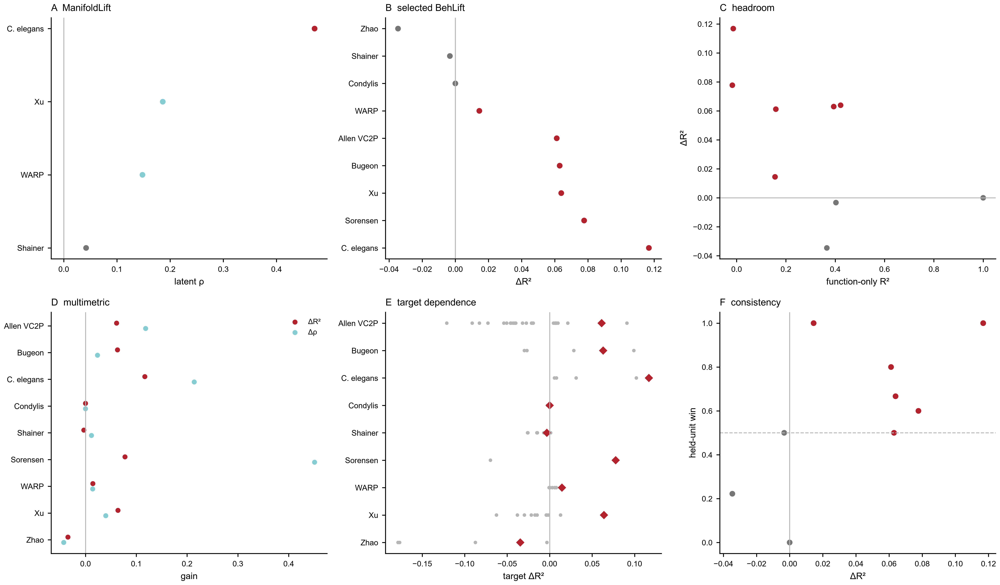
Inference: panel-specific held biological units
Null/control: panel-specific matched null / held-unit contract
PNG · SVG · PDF
MAIN_A
Fig4A_ManifoldLift_current
C. elegans 是最强的 normalized manifold reconstruction；Xu 与 WARP 更偏向保留 rank/geometry 信息；Shainer 是 amplitude boundary。
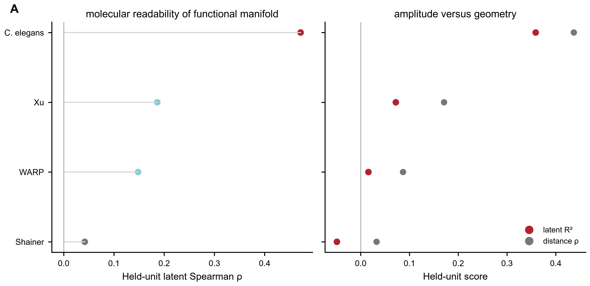
Inference: held biological unit by dataset
Null/control: train-derived manifold evaluated on held units
PNG · SVG · PDF
MAIN_B
Fig4B_selected_target_completion_current
当前 biologically selected targets 中，C. elegans、Xu、Allen VC2P、Bugeon 与 Sorensen 有较明显 conditional molecular gain，WARP 较小，Shainer、Zhao、Condylis 保留为边界。
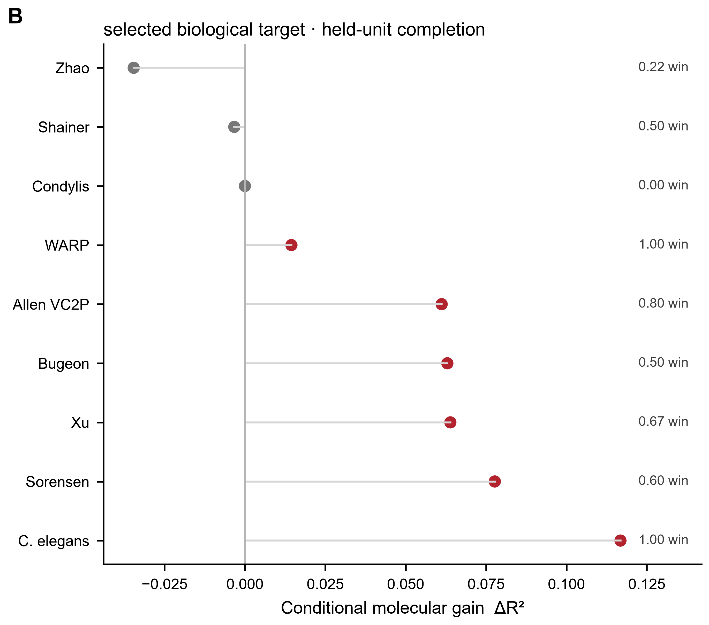
Inference: 3–74 held biological groups depending on dataset
Null/control: same held-unit function-only versus function+genes
PNG · SVG · PDF
MAIN_C
Fig4C_headroom_vs_gain_current
conditional molecular gain 强烈受功能 headroom 限制；Condylis 的接近零增益主要是 ceiling/saturation boundary，不能解释成分子信息无关。
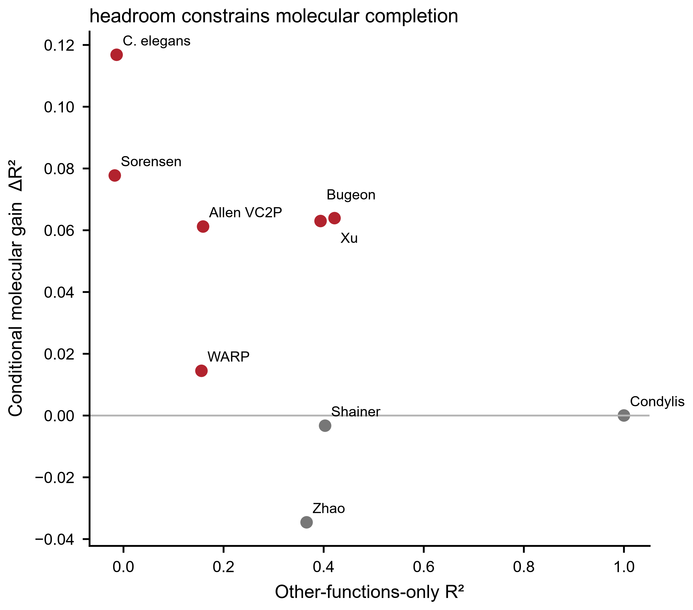
Inference: dataset-selected held biological units
Null/control: function-only headroom versus joint molecular increment
PNG · SVG · PDF
MAIN_D
Fig4D_multimetric_completion_current
同一个 selected target 在 R²、rank 与 classification metrics 上的 gain 可以不同，因此不能只用单一 R² 讲完整故事。
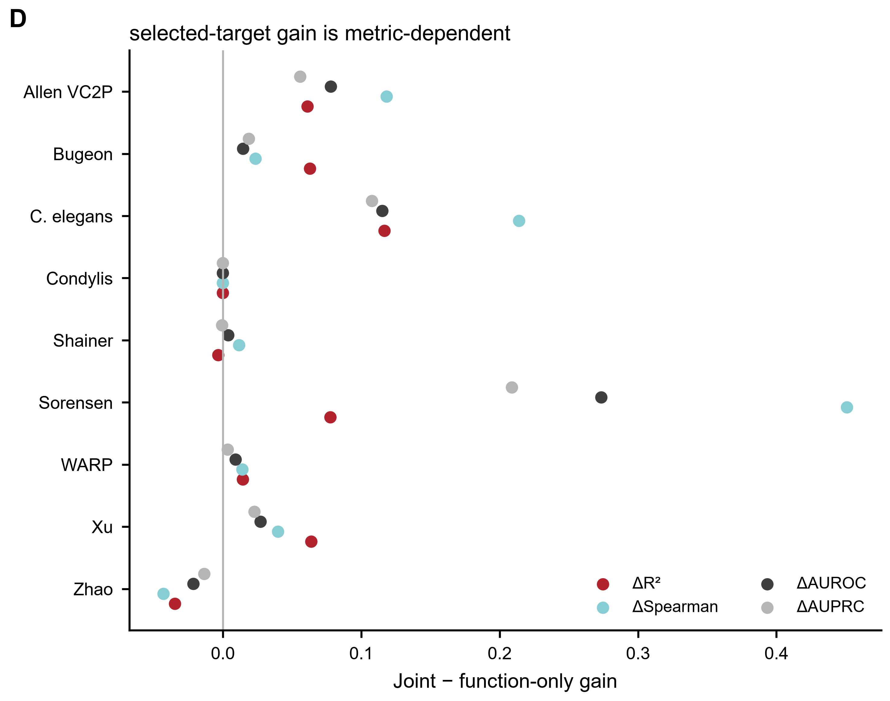
Inference: held biological units
Null/control: same target and folds across function-only and joint models
PNG · SVG · PDF
MAIN_E
Fig4E_target_dependence_current
同一 dataset 内，molecular completion 会随被遗漏的行为/状态明显变化；选中的 biological target 不能替代完整 target distribution。
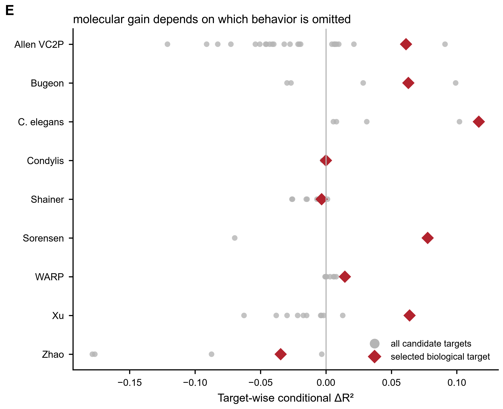
Inference: 76 target-level held-unit tests across 9 datasets
Null/control: all candidate targets retained
PNG · SVG · PDF
MAIN_F
Fig4F_heldunit_consistency_current
把 effect size 与 held-unit consistency 一起看，才能区分稳健正例、方向性结果和负边界。
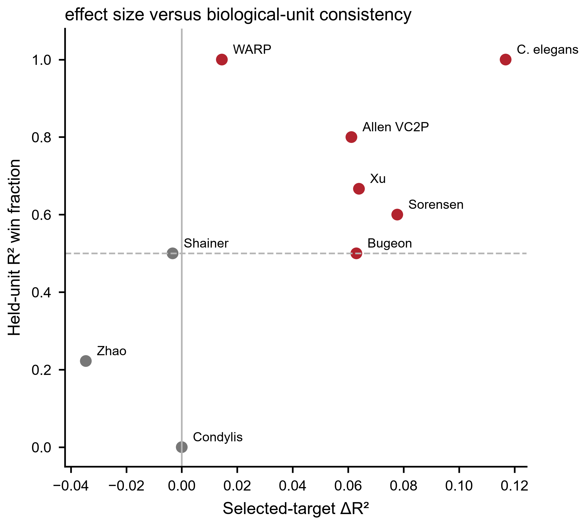
Inference: held biological units
Null/control: effect size plus held-unit win fraction
PNG · SVG · PDF
ED1_DYNAMIC
Fig4_ED1_WARP_dynamic_geometry
WARP 的 dynamic subspace geometry 明显强于 static exact reconstruction；这两个 contract 必须分开。
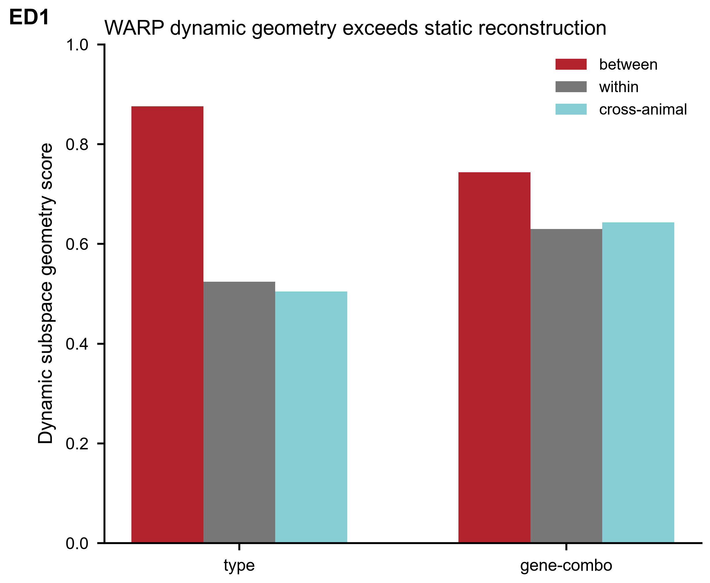
Inference: cross-animal dynamic geometry
Null/control: between/within/cross-animal geometry
PNG · SVG · PDF
ED2_RELATION
Fig4_ED2_relation_index_q
matched-null relation-index 在多个 dataset 中支持 molecule-function structure，即使 amplitude prediction 并不强。
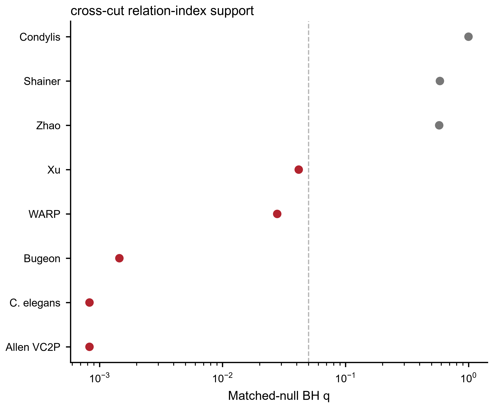
Inference: held groups by dataset
Null/control: matched relation-graph null with BH correction
PNG · SVG · PDF
ED3_RANK_TARGETS
Fig4_ED3_target_spearman_dependence
rank-level molecular gain 同样高度 target-dependent。
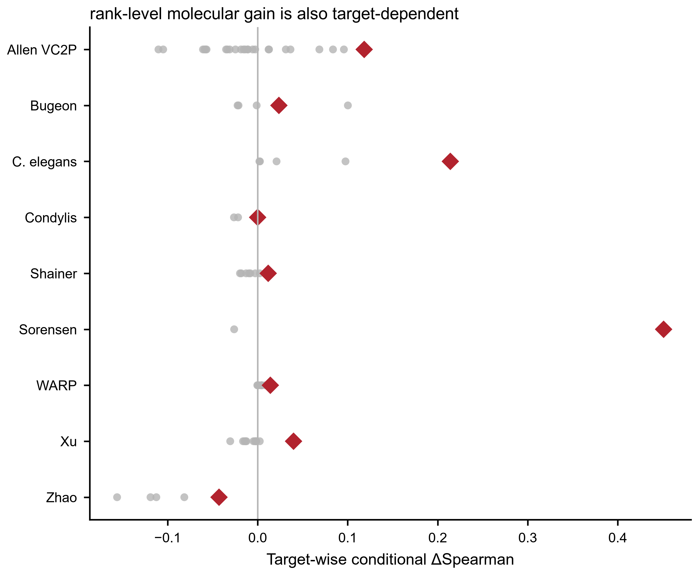
Inference: 76 target-level held-unit tests
Null/control: target-wise conditional Delta Spearman
PNG · SVG · PDF
ED4_BREADTH
Fig4_ED4_target_breadth
不同 dataset 中 conditional molecular gain 的覆盖面差异很大，不能被单一 selected target 代表。
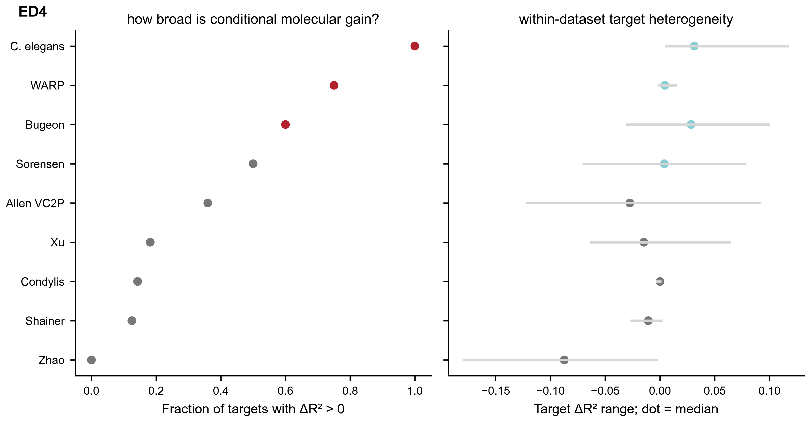
Inference: all candidate targets by dataset
Null/control: fraction positive plus target range
PNG · SVG · PDF
ED5_ATLAS_MANIFOLD
Fig4_ED5_atlaslift_manifold_mixed
Atlas augmentation 是 metric-dependent 的；可以改善某个 geometry metric，同时让另一个 metric 不变或变差。
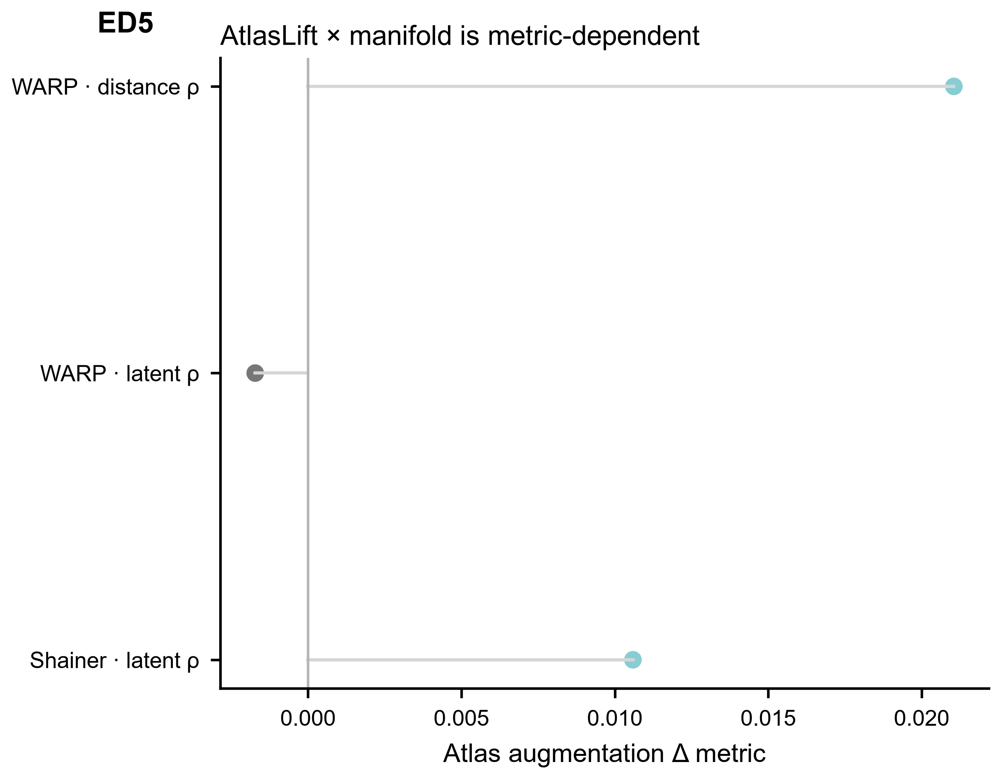
Inference: held-fish frozen lineage
Null/control: metric-specific atlas augmentation
PNG · SVG · PDF
ED6_STRICT
Fig4_ED6_strict_conditional_contracts
冻结的 strict contracts 独立支持 Xu Ghrelin completion 与 WARP D2 的跨 cohort AtlasLift→BehLift bridge。
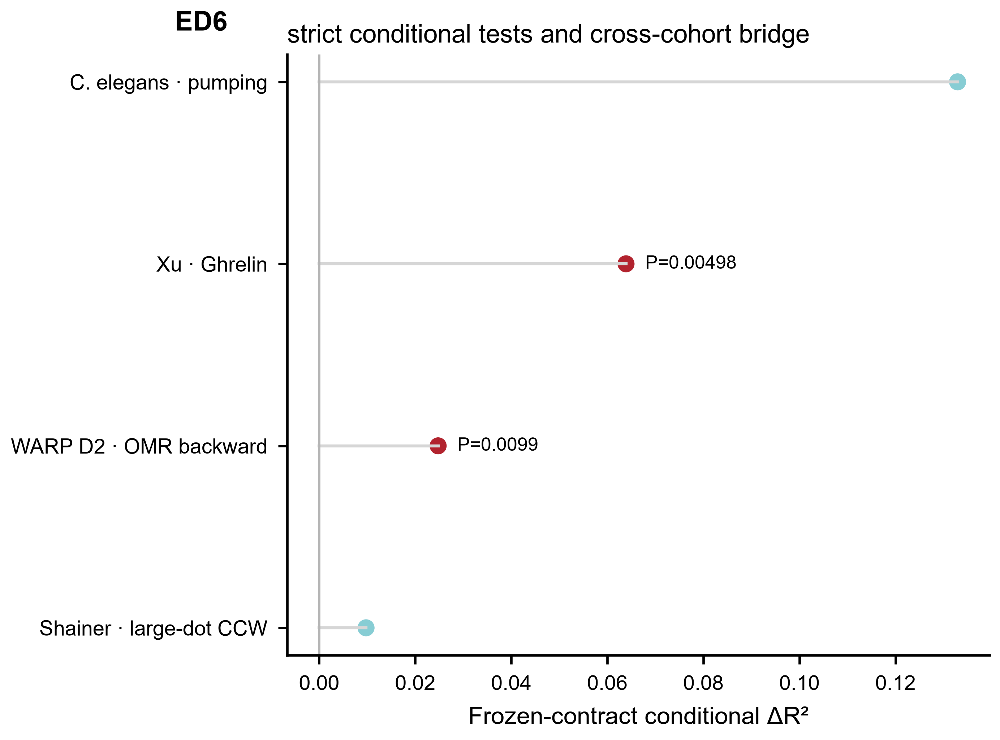
Inference: contract-specific held animals / cross-cohort fish
Null/control: strict permutation or frozen conditional null
PNG · SVG · PDF